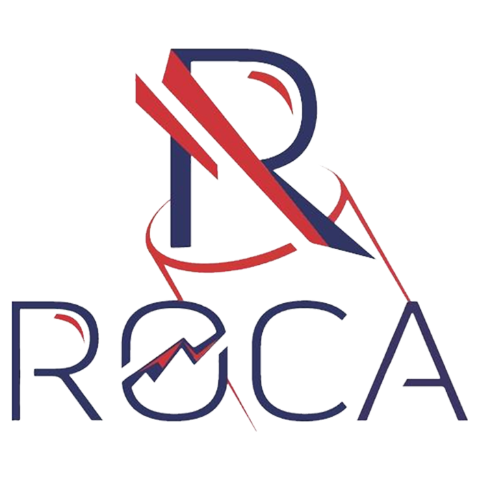
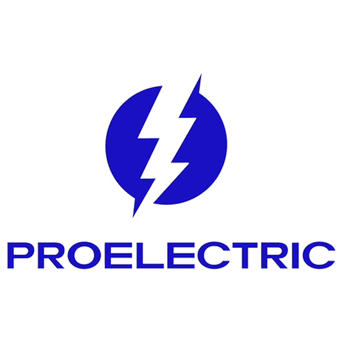
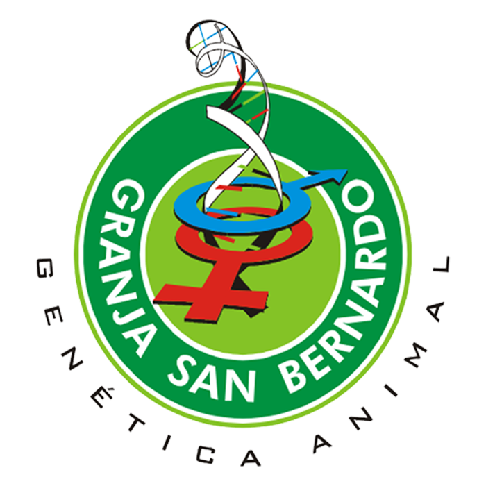
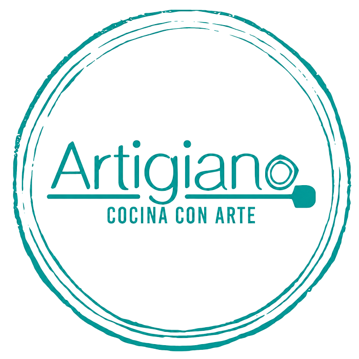
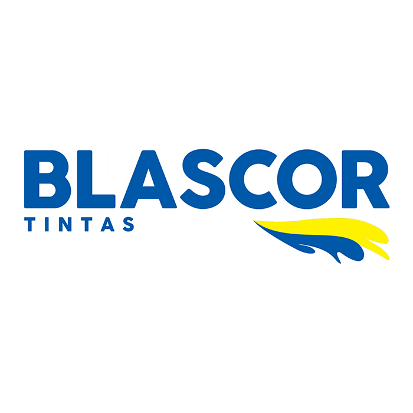

Punto Ok! TótemMarcación presencial
- Pensada para marcación presencial
- Reconocimiento facial
- Sin toque
- Modo offline
- Uso en puntos fijos de marcación

Control de asistencia, turnos y salarios en un solo sistema.

Para administración, RRHH y gestión central.
Ver
Para usos en puntos fijos de marcaciones.
Ver
Para marcar, consultar y operar desde el celular.
VerApp Punto Ok! Tótem y Colaboradores según la necesidad de cada empresa.


Presencia · Permiso

Anticipo · Compras · Movilidad · Bonus · Gratificaciones · Comisiones

Solicitud y control de vacaciones

Gestión de reposos médicos
Historial de marcaciones · Geolocalización · Face ID
Punto Ok ayuda a las empresas a controlar asistencias, organizar turnos, gestionar información laboral y simplificar procesos de RR.HH. desde la web y apps móviles.


En la demo vamos a recorrer los puntos más importantes según la realidad de tu empresa.
Clientes






